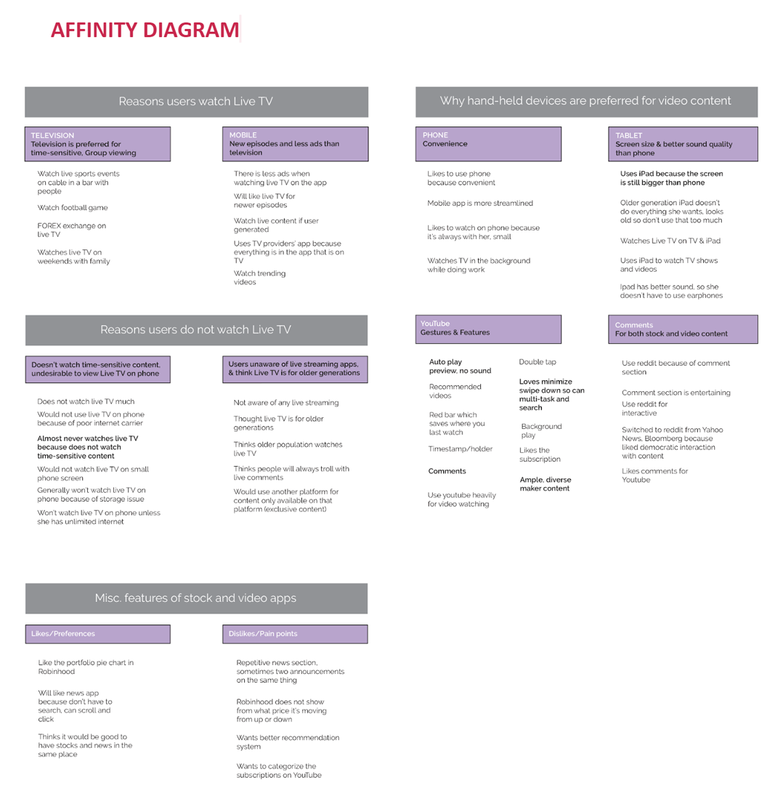

Understand
Interaction Map
To better understand our product, we created an interaction map. Creating an interaction map helped us glimpses into potential user journeys, pain points, and see how the different features of the app collectively created a product.

Interviews
